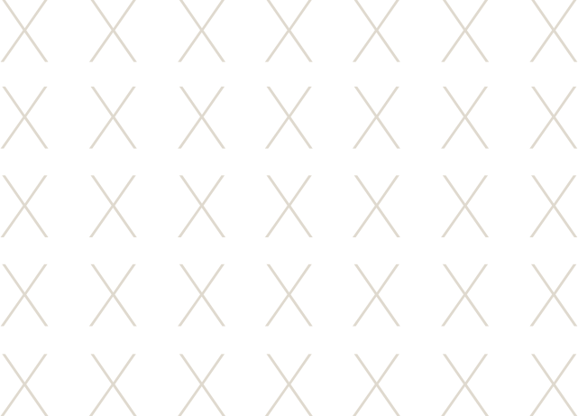
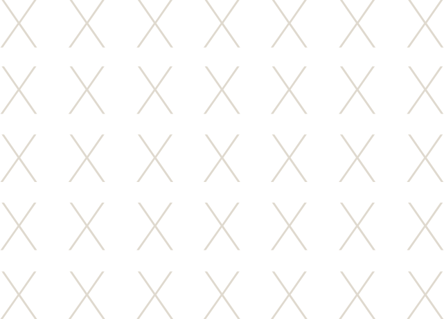
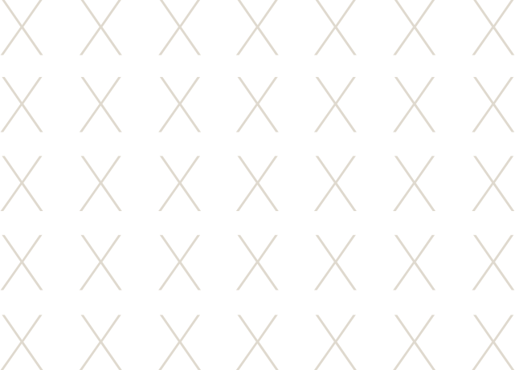
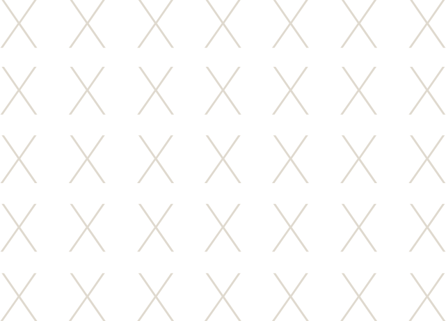

12.03.19–12.14.19
Democracy, Design,
and the Mueller Report


 



This work was partially funded by the Office of the Vice Provost of Research at Indiana University Bloomington through the Grant-in-Aid Program. Ongoing Matter would also like to thank the Grunwald Gallery for their support.
Ongoing Matter is a multi-platform, traveling collection of new poster designs that mobilizes political engagement. This exhibition seeks to encourage engagement with the Report On The Investigation Into Russian Interference In The 2016 Presidential Election, or, as it is more colloquially known, the Mueller Report. These contemporary poster designs seek to make the Report accessible, and thus make the possibility of genuine, thoughtful, and passionate engagement with its findings possible. The show illuminates the major threats to democracy cited in the Mueller Report. The collection will travel to several venues, including the Krasl Art Center in St. Joseph, Michigan, as well as Cleveland State University Galleries in Cleveland, Ohio. This exhibition functions as a living showcase of current political artefacts that seeks to empower citizens at a crucial moment in the democratic experience (pre-2020 presidential elections). As graphic designers, the artists in this exhibition consider their charge one of emancipation: using the art of communication to reveal, persuade, and propel action. It should be noted that this project is non-partisan; even if the audience that experience this work has varied ideologies, the ultimate goal is to energize citizens to participate in their own democracy. Ongoing Matter is concerned with preserving democracy, protecting integrity, and sharing knowledge.
As a designer, storyteller, and researcher, Professor Martin specializes in dark narratives and contemporary fable. An Assistant Professor of Graphic Design at Indiana University, her work experiments with eclectic media, allowing diverse processes in printmaking, animation, and early photographic methods to inform her design practice. She continues to balance an active studio practice with both research and pedagogy. Her international portfolio of clients include Citibank, AMC’s the Walking Dead, the University of Notre Dame, Whirlpool, Herman Miller, and Cook Medical, to name a few.
Anne H. BerryAnne H. Berry joined Cleveland State University (CSU) in August 2016 as an Assistant Professor of Graphic Design. She earned her MFA degree from the School of Visual Communication Design at Kent State University, and subsequently worked as an Assistant Professional Specialist at the University of Notre Dame. She is a 2018 Design Incubation Fellow and serves as the chief creative officer for Round3, a web application that facilitates online peer reviews. Her research focuses on ethnic and racial disparities within the field of graphic design and the role of social impact design (in education) as a means of addressing the design industry’s lack of diversity.